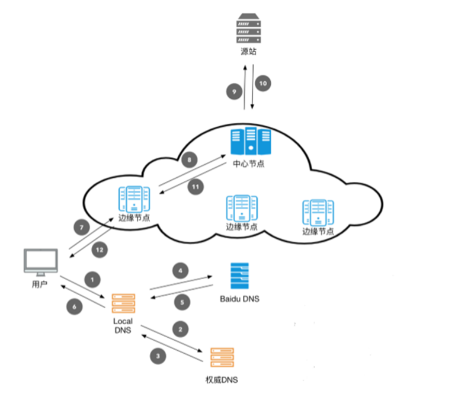

本文隶属于网站优化 分类，点击分类名称可以查看更多相关文章；
[post cid="6538" cover="https://limbopro.xyz/usr/uploads/2019/12/2912835083.jpg"/]
做DDoS防御的方法有很多种，但最多的两种莫过于加钱或装死。
主理人序
加钱，万万是不可能加钱的
那就只有装死了
静态或伪静态都可以很好的减轻服务器负载，
甚至可以说是无敌（几乎；
静态的情况下再配置cloudflare家的免费CDN以隐藏源站服务器IP
大概就可以永久在线了
我要变强

背景知识
快速的全球内容交付网络
内容分发网络（Content Delivery Network，CDN）通过将站点内容发布至遍布全国的海量加速节点，使其用户可就近获取所需内容，避免网络拥堵、地域、运营商等因素带来的访问延迟问题，有效提升下载速度、降低响应时间，提供流畅的用户体验。
via 内容分发网络 CDN
静态页面：htm、html、shtml、xml
静态网页是指存放在服务器文件系统中实实在在的HTML文件。当用户在浏览器中输入页面的URL，然后回车，浏览器就会将对应的html文件下载、渲染并呈现在窗口中。早期的网站通常都是由静态页面制作的。
动态页面：asp、jsp、php、perl、cgi
动态网页是相对于静态网页而言的。当浏览器请求服务器的某个页面时，服务器根据当前时间、环境参数、数据库操作等动态的生成HTML页面，然后在发送给浏览器（后面的处理就跟静态网页一样了）。很明显，动态网页中的“动态”是指服务器端页面的动态生成，相反，“静态”则指页面是实实在在的、独立的文件。
via 静态网页与动态网页的区别
姿势点小结
静态页面不会涉及数据库请求，也无需经过PHP处理，几乎零消耗；这样的情况下，只需要使用到nginx，而nginx的高性能低消耗，想操烂基本不可能（那得多大仇...
*本博客所有.html网页均为伪静态，非真静态；
部署CDN
部署免费CDN

部署CDN的好处：隐藏源站服务器IP，CDN可以有效节省服务器带宽；
1.打开cloudflare，注册账号，添加域名，迁移DNS服务商；（英文界面，但很简单...
2.使用 censys 检测源站服务器IP是否泄漏；
3.如泄漏，请及时更换IP；
缓存静态资源概述
默认情况下，Cloudflare CDN 缓存具有以下文件扩展名的文件：
| bmp | ejs | jpeg | ps | ttf | |
|---|---|---|---|---|---|
| class | eot | jpg | pict | svg | webp |
| css | eps | js | pls | svgz | woff |
| csv | gif | mid | png | swf | woff2 |
| doc | ico | midi | ppt | tif | xls |
| docx | jar | otf | pptx | tiff | xlsx |
以上，不在范围内的就不会缓存了。参考：必用的基本页面规则，在Cloudflare中设置你想要缓存的页面或者目录，注意，这个参考非常重要。
*Cloudflare 仅缓存从您网站直接提供的资源。第三方资源（Facebook、Flickr 等）不会被缓存。Cloudflare 当前不会按 MIME 类型进行缓存。
静态镜像
制作静态镜像
wget --mirror -t 2 -S -N -k https://limbopro.xyz -P /home/wwwroot/public/1.使用wget命令，下载一份网站的镜像（网站上公开的所有内容...
2.得到一份静态镜像（里面有html/jpg/...；
3.其中的参数-k为将链接转化为本地路径；
4.其中的参数-P为备份保存路径，届时会自动创建文件夹，文件名字将以网站名字命名；
5.最终得到 /home/wwwroot/public/limbopro.xyz；
使用静态镜像
1.前面已经说了，通过mysql/php动态生成网页会消耗服务器大量性能资源；
2.攻击者通过大量请求把服务器性能消耗完毕，以使网站瘫痪；
3.攻击者用的方法有很多，可参考 https://t.me/limboprossr/1128
修改nginx配置路径以使用静态镜像；
index index.html index.htm index.php default.html default.htm default.php index.log main.html;
root /home/wwwroot/pubilc/;以上，正常配置时的路径/home/wwwroot/public/；
index index.html index.htm index.php default.html default.htm default.php index.log main.html;
root /home/wwwroot/public/limbopro.xyz;修改配置到备份文件夹，修改后重启 nginx 即可；
动静态切换的适用类型
1.个人博客可以使用此方法，只需实现文章的排版展示即可（CSS搭配HTML即可轻松实现；
2.论坛，社区不可用（因为这些地方需要交互，需要大量调用数据库，PHP等，静态网页是肯定不行的；
自动切换静态镜像脚本
1.使用crontab自动执行脚本：CPUcheck.sh & 100cpu.sh；
2.3分钟内有两次高负载则自动切换静态；
3.脚本中涉及ps/grep以及if的应用
4.较为通俗易懂，
5.仅供参考；
/home/100cpu.sh
该脚本用于检查每分钟的CPU负载情况，达到阈值(比如CPU使用率达到80%)则记录至/home/100cpu.log；
#!/bin/bash
##CPU判定
function GetSysCPU
{
CpuIdle=`vmstat 1 5 |sed -n '3,$p' | awk '{x = x + $15} END {print x/5}' | awk -F. '{print $1}'`
CpuNum=`echo "100-$CpuIdle" | bc`
echo $CpuNum
}
usage=`GetSysCPU`
max=80 #CPU阈值，超过则记录至100cpu.log
if [ ${usage} -ge $max ];
then
date=$(env LANG=en_US.UTF-8 date "+%e/%b/%Y/%R")
echo "$date，CPU负载为$usage..." >> /home/100cpu.log
else
date=$(env LANG=en_US.UTF-8 date "+%e/%b/%Y/%R")
##echo "$date，CPU负载为$usage%..." >> /home/100cpu.log
echo "${date}" "CPU负载正常..."
fi/home/CPUcheck.sh
该脚本用于统计 /home/100cpu.log 的记录值，统计一定时间范围（本示例是3分钟）内CPU负载超标次数，本示例中超标次数超过2次则切换使用静态镜像，并关闭MySQL/PHP；
#!/bin/bash
##判定层
ps -fe|grep "wget" |grep -v grep
if [ $? -ne 0 ]
#判定层
then
##执行层
> /home/100cpu.statistics.log; ##清空记录
wc -l /home/100cpu.log >> /home/100cpu.statistics.log #记录
results=$(awk '{print $1}' /home/100cpu.statistics.log) #记录
> /home/100cpu.log; #清空记录
max=2 #触发阈值为2次
if [ $results -ge $max ];
then
/home/switch2static.sh; #非备份情况下超过阈值则触发静态
else
date=$(env LANG=en_US.UTF-8 date "+%e/%b/%Y/%R")
/home/sec.ddoscheck.normal.sh; #切换至正常状态
echo "${date}" "已切换至正常模式..." >> /home/nglog.log; #记录操作日志
fi
##执行层
else
#Wget正在备份
date=$(env LANG=en_US.UTF-8 date "+%e/%b/%Y/%R")
echo "${date}" "CPU高，主要是因为在备份..." >> /home/nglog.log; #记录操作日志
fi/home/switch2static.sh
该脚本用于切换 nginx 配置文件，并加载配置使之生效；其中 .conf.ddos 的配置方法可参考本文 使用静态镜像 一节；
#!/bin/bash
date=$(env LANG=en_US.UTF-8 date "+%e/%b/%Y/%R")
echo "${date}" "已进入静态防御模式..." >> /home/nglog.log; #记录操作日志
cp /usr/local/nginx/conf/vhost/limbopro.xyz.conf.ddos /usr/local/nginx/conf/vhost/limbopro.xyz.conf; #博客切至静态配置
lnmp nginx reload #reload 配置使生效
#killall mysql; #关闭数据库
lnmp mysql stop;
lnmp php-fpm stop;
#killall php-ftm; #关闭php/home/sec.ddoscheck.normal.sh
该脚本用于切换 nginx 配置文件 至正常状态；
/bin/cp /usr/local/nginx/conf/vhost/limbopro.xyz.conf.bak /usr/local/nginx/conf/vhost/limbopro.xyz.conf #limbopro.xyz.conf.bak为正常nginx配置备份
lnmp nginx reload;
/bin/bash /home/autorestart.sh #检测MySQL/PHP状态并重启/home/autorestart.sh
该脚本用于检测并重启 MySQL/PHP；
#!/bin/bash
#mysql 检测重启
/bin/ps -ef | grep mysql |grep -v grep > /dev/null
if [ $? != 0 ];then
lnmp mysql restart > /dev/nullf
fi
#php-fpm 检测重启
/bin/ps -ef | grep php-fpm.conf |grep -v grep > /dev/null
if [ $? != 0 ];then
lnmp php-fpm restart > /dev/nullf
fi使用crontab自动执行脚本
最后一步，使CPUcheck.sh/100cpu.sh脚本的执行自动化，其中的参数可根据需要自行修改；
root@localhost:/home# crontab -e
*/3 * * * * /home/CPUcheck.sh #每3分钟检测是否超过阈值
*/1 * * * * /home/100cpu.sh #每分钟记录一次CPU值Crontab的使用可参考Linux crontab 命令；
其他
无。
总结
以最小的成本应对攻击，并保持网页链接打开完好完整（损失更新文章特性），我觉得这仍然不失为一个不错的策略。博主仍在努力学习相关知识，也希望本篇文章能给大家带来帮助。
联系主理人
1.关注频道 https://t.me/limboprossr 不失联；
2.毒奶粉们（我管我的Fans）可联系 TG机器人 或发送 邮件 获取帮助；
{kind=link}
3.或点击本页面右下角的聊天按钮联系；